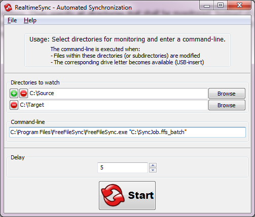
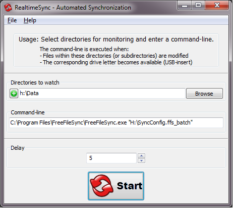

RealtimeSync's primary function is to trigger synchronization immediately after files in a source directory have changed. However its implementation is much more flexible to cover an even broader range of use: A list of directories provided by the user is monitored for changes. Whenever a file within these directories or subdirectories is modified OR the directory becomes available (e.g. insert of a USB-stick), RealtimeSync responds by executing the user-specified command line.
Example: (Real time synchronization - in combination with FreeFileSync)
First start up RealtimeSync.exe located in FreeFileSync's installation directory. Then specify all directories that shall be monitored. Instead of doing this manually you can simply import a *.ffs_batch file via Menu -> File -> Load configuration. This not only extracts all directories relevant for synchronization but also sets up the command-line to execute the *.ffs_batch file every time changes are detected. Now press "Start" to begin monitoring.

Note:
Using RealtimeSync is not
restricted to starting FreeFileSync. It can also be used in other
scenarios, like sending an email whenever a certain directory is
modified.
Starting the tool can be automated
by passing a RealtimeSync configuration file (*.ffs_real)
OR a FreeFileSync Batch file (*.ffs_batch)
as first command-line argument. This allows for integration with
your operating system's autostart facility:
"C:\Program
Files\FreeFileSync\RealtimeSync.exe"
"C:\MyConfig.ffs_real"
"C:\Program
Files\FreeFileSync\RealtimeSync.exe" "C:\SyncJob.ffs_batch"
Example: (Smart synchronization when USB sticks are inserted into your PC - in combination with FreeFileSync)
Assume you have multiple(!) USB sticks that contain data you want to automatically synchronize in two-way mode whenever you insert one of the sticks into the PC. In order to be on the safe side, you decide to setup FreeFileSync batch jobs (*.ffs_batch) using <Automatic> mode so that conflicts, for example files modified on both sides, are detected avoiding data loss. Save the relevant configuration on each USB stick's root directory to have it called when the stick is mounted. Then configure RealtimeSync analog to the following:

Whenever directory "H:\Data" becomes available, the command-line executes and starts the batchjob whose configuration is located on the stick. Furthermore it also starts the batch job each time files are modified within "H:\Data".
For additional convenience it might be nice if the batch job remains silent if synchronization completes successfully, otherwise shows FreeFileSync's GUI dialog when errors occurred. Therefore create two configurations, one silent-mode batch to be called by default and one *.ffs_gui to be called when former fails. Then replace the command-line to simply execute a batch file similar to this one:
::first
check whether USB-stick contains a sync-configuration at all
@if
exist "H:\Silent_Config.ffs_batch" (
::configuration
found, now execute the synchronization batch job
"C:\Program
Files\FreeFileSync\FreeFileSync.exe"
"H:\Silent_Config.ffs_batch"
@if not errorlevel 0
(
::if
something went wrong, start FreeFileSync in GUI
mode
"C:\Program
Files\FreeFileSync\FreeFileSync.exe"
"H:\GUI_Config.ffs_gui"
)
)